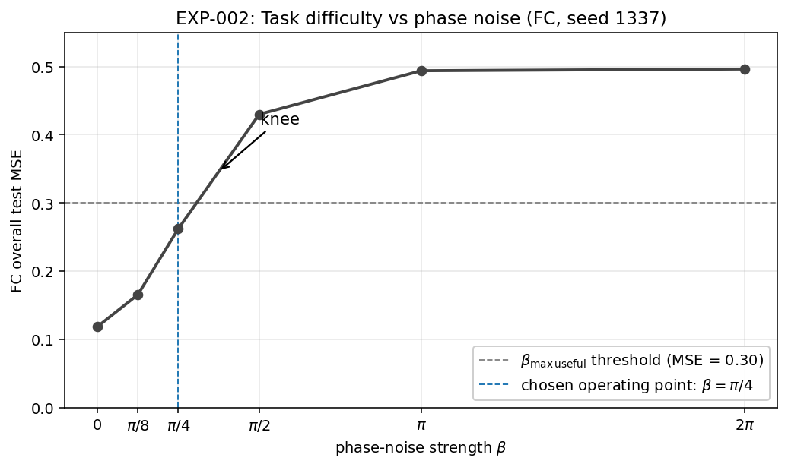
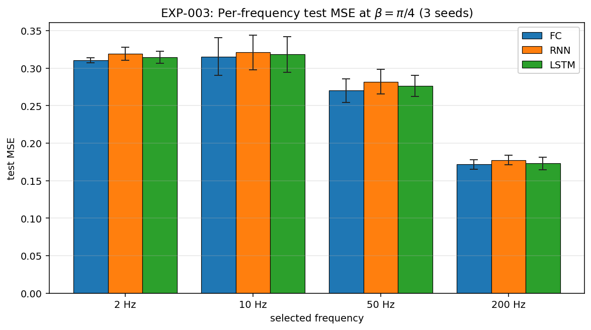
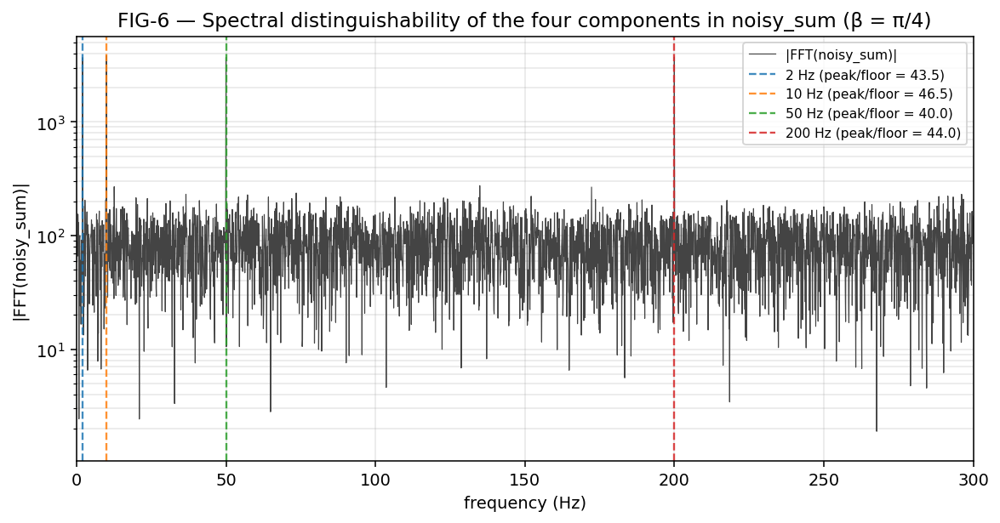
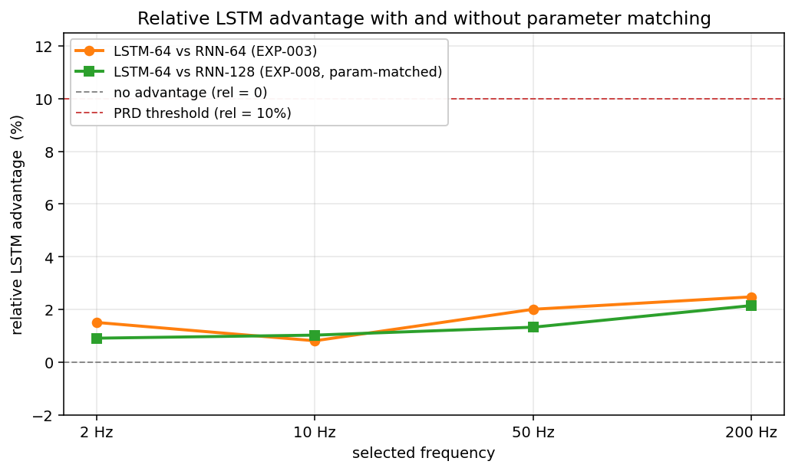
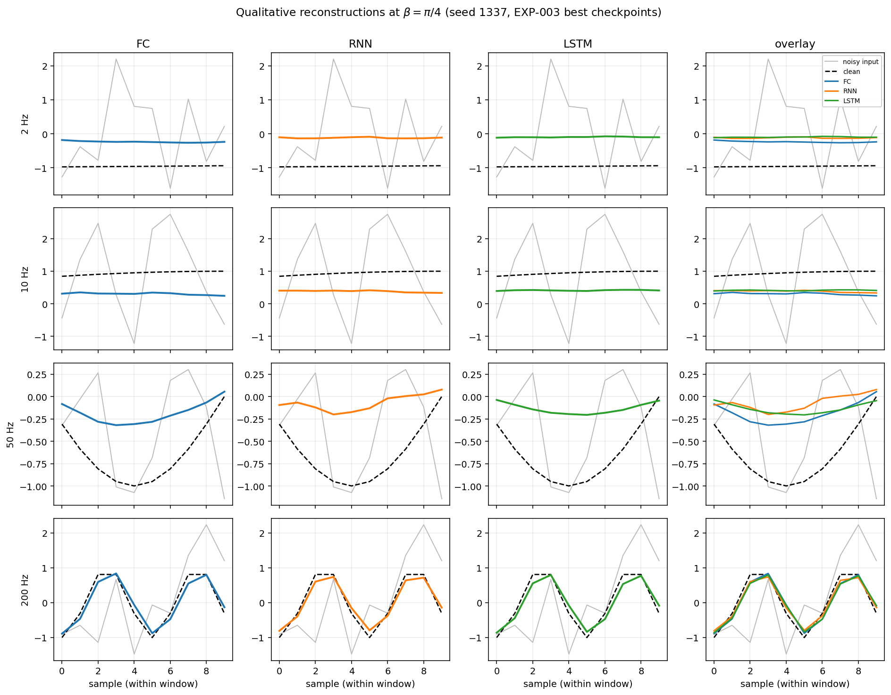
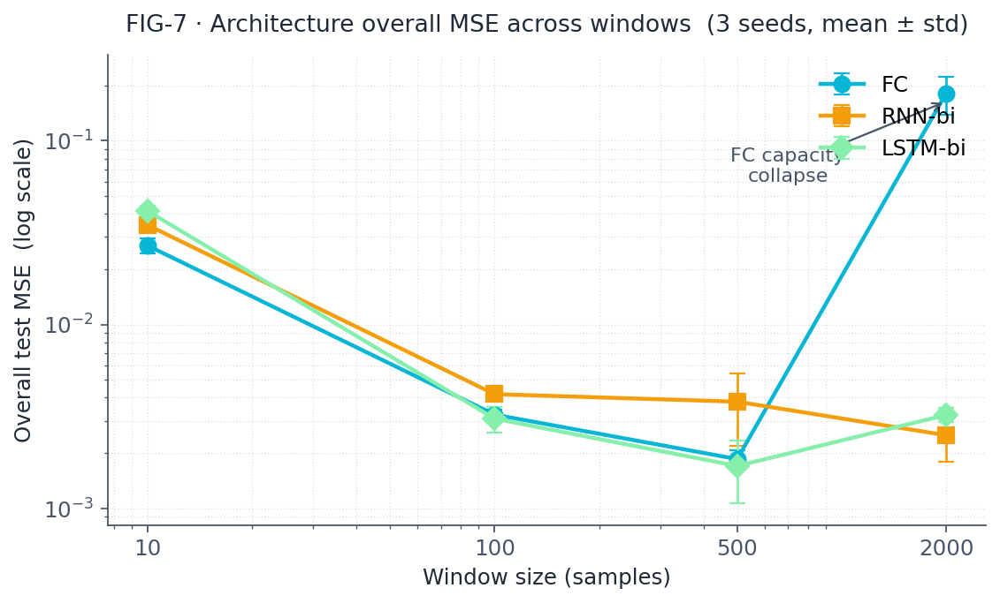

FC
Fully connected baseline
Input (B, 14) — concat of selector + window.
Input (B, 14) │ ▼ Linear 14 → 64 │ ReLU ▼ Linear 64 → 64 │ ReLU ▼ Linear 64 → 10 │ ▼ Output (B, 10)
- parameters~5,770
- rolenon-temporal baseline
A neural-network study that didn't confirm the lecturer's thesis — and why that's actually a stronger result.
Three architectures, four sine waves, ten samples.
We measured why some tasks can't be solved no matter how good your model is.
01
Take four pure sine waves of different frequencies. Add them together. Add noise to the phase of each one. Then, given a small ten-sample window of that noisy sum and a one-hot vector saying which sine you want, recover the corresponding clean window.
Four sinusoids at 2 Hz, 10 Hz, 50 Hz, 200 Hz, sampled at 1 kHz for 10 seconds. Each one gets a small amplitude perturbation (5%) and a configurable phase perturbation β. They're summed component-by-component; the model sees the noisy sum.
Only ten consecutive samples of the noisy sum (10 ms) are visible. Plus a one-hot selector. The model outputs ten samples — the predicted clean window for the chosen sinusoid.
A fully-connected baseline, a vanilla RNN, and an LSTM. Same input information rate; different inductive biases. The selector is broadcast to every recurrent timestep so the three models are comparable.
↳ personal follow-up A post-submission GPU continuation tested this prediction at window=100–2000 with fair architectural treatment. The thesis holds in a middle band only (window 100–500), not monotonically. See § Beyond the submission ↓
Why high frequencies are easier in our experiments — visualised at a window length of 10 samples.
200 Hz — full cycles fit; phase locatable.
2 Hz — flat slope; phase ambiguous.
This is why high frequencies are easier in our experiments. Same architecture, same training — different information content in the input.
02
Four model variants, one input contract. Three primary architectures (FC, RNN, LSTM) plus a parameter-matched RNN used as a capacity control in EXP-008.
Input (B, 14) — concat of selector + window.
Input (B, 14) │ ▼ Linear 14 → 64 │ ReLU ▼ Linear 64 → 64 │ ReLU ▼ Linear 64 → 10 │ ▼ Output (B, 10)
Input (B, 10, 5) — selector broadcast onto every timestep.
Input (B, 10, 5) │ ▼ nn.RNN h=64 │ tanh, 1 layer ▼ take last timestep │ ▼ Linear 64 → 10 │ ▼ Output (B, 10)
Same input shape as RNN.
Input (B, 10, 5) │ ▼ nn.LSTM h=64 │ gated, 1 layer ▼ take last timestep │ ▼ Linear 64 → 10 │ ▼ Output (B, 10)
Identical to the RNN above except hidden size is doubled.
Input (B, 10, 5) │ ▼ nn.RNN h=128 │ tanh, 1 layer ▼ take last timestep │ ▼ Linear 128 → 10 │ ▼ Output (B, 10)
All three primary models (FC, RNN, LSTM) share the same input contract: a 4-dimensional one-hot selector identifying which sine to extract, plus a 10-sample window of the noisy mixture. The selector is concatenated with the input directly for FC, and broadcast onto every timestep for RNN and LSTM. This keeps the comparison apples-to-apples — every architecture sees the same information at the same rate.
03
Three commitments shaped the project from before it had a single line of Python.
Six formal specs and twelve architectural decision records were written and approved before any .py file existed — per Dr. Segal's guidelines § 1.5.
docs/
├── PRD.md
├── PLAN.md
├── TODO.md
├── PRD_signal_generation.md
├── PRD_dataset_construction.md
├── PRD_models.md
├── PRD_training_evaluation.md
└── adr/
├── ADR-001-gatekeeper-na.md
├── ADR-003-selector-broadcast.md
├── ADR-016-random-sampling-stationary.md
└── ... (12 total)
Every module had a failing test before it had an implementation. The full RED → GREEN → REFACTOR loop, no exceptions.
This followed the "vibe coding" methodology of § 0.2 — the author orchestrated two Claude instances (one writing, one reviewing) across 22 logged prompt sessions. Every significant prompt is reproduced verbatim in docs/PROMPTS.md.
Token cost during development: ~290k input / ~200k output. The audit ran on the same workflow and caught real issues — see § Failed approaches.
04
A study isn't a single training run. Here is what actually happened, in order.
The PRD locked the phase-noise level at β = 2π. At that setting, all three architectures collapsed to the trivial floor — predicting zero. MSE ≈ 0.50 across the board, which equals the variance of a unit-amplitude sinusoid: the model has learned nothing and is outputting flat zero.
Verdict: the locked configuration was unlearnable. Not a bug — a planning error. We needed to find a regime where the task is hard but solvable.
A β-sweep across six values from 0 to 2π (FC only, single seed) mapped the difficulty curve. The MSE walks monotonically up: 0.118 → 0.165 → 0.262 → 0.430 → 0.494 → 0.496. There is a clear knee between π/4 and π/2.

We chose β = π/4 as the operating point: MSE ≈ 0.262 (recovering ~48% of variance over the floor), task non-trivial but learnable.
Three architectures, three seeds, β = π/4. The per-frequency MSE breakdown was the surprise of the project:

The first hypothesis — "the 2 Hz target is near-constant within the window, so it can't be recovered" — was falsified by the audit. The window's start index ranges over ~20 full periods of the 2 Hz signal, so the target variance is uniform across all frequencies. Whatever the cause, it isn't that.
So we measured information directly. Var(W_clean | W_noisy) — how much uncertainty about the clean target is left after seeing the noisy input?
A 200 Hz sine completes two full cycles in a 10-sample window. The input is rich with phase information. A 2 Hz sine moves through 0.02 of a cycle in the same window — it's nearly featureless. The bottleneck isn't the architecture. It's the window.

An LSTM-64 has ~3.6× the parameters of an RNN-64. Could the small LSTM advantage we saw be just a capacity effect? We re-ran with an RNN-128 (18,570 params, 98.6% of the LSTM).

The LSTM still beat the RNN-128 — but only by +0.91% at 2 Hz to +2.15% at 200 Hz. The RNN-128 itself was no better than the RNN-64 (0.13σ difference). Capacity wasn't the binding constraint. The gating contributes a real but tiny effect.
05
By the strict criteria we wrote down before running anything: refutation. By a longer look: something more interesting.
Pre-registered protocol (PRD § 8.4) requires both low-frequency cells to clear 10% LSTM-vs-RNN improvement and a negative Spearman ρ.
Both magnitudes are far below threshold. The rank correlation has the wrong sign. By the letter of our protocol, the thesis is not confirmed.
The lecturer's thesis predicts LSTM excels where long-range memory matters. Our configuration provides neither:
The result is real. The result is precise. But it's a refutation of the experiment, not the theory.
A genuine RNN-vs-LSTM frequency-bias test would need a longer window, or a different distinguishability measure. We propose those as follow-ups in the README.
↳ personal follow-up A GPU continuation tested the thesis at window=100, 500, and 2000 with bidirectional, multi-layer, seq-to-seq treatment. Result: partially supported — RNN wins on all-high-frequency sets; LSTM does not win on all-low-frequency sets; FC catastrophically collapses at window=2000. See § Beyond the submission ↓
The difficulty curve in β has a measurable knee around π/4; useful comparisons happen there.
The inverted difficulty profile is explained by an information bottleneck in the input window, not by architecture.
Capacity is not the binding constraint — a 3.6× larger RNN doesn't close the gap, but the gap was already tiny.
06
Numbers are persuasive, but pictures end the argument. One window per frequency, drawn from a held-out test split.

07
A research notebook that hides its mistakes is fiction. Here is what we got wrong, what caught it, and what we did about it.
"The 2 Hz target is near-constant within a 10-sample window" — sounds plausible, isn't true. Caught by the audit. Target variance is uniform across frequencies; the cause is information content, not target flatness.
It was a noise floor — the task is unlearnable there. Rescued by EXP-002, which sweeps β and finds the knee. The operating point is now data-derived rather than PRD-derived.
Documents stated torch.use_deterministic_algorithms(True) was called. The audit found it was not. Fixed in shared/seeding.py; a new test (T-SD-04) prevents regression.
Cosmetic but real — manual claims diverged from AST-counted reality. Reconciled against actual measurements.
It can't. A ten-sample window cannot distinguish the four frequencies — and that's the precondition for the thesis to be falsifiable. The whole experimental setup, written from the lecturer's brief, was downstream of an assumption nobody questioned at planning time. We questioned it after the data came in.
7½
What we found when we kept investigating.
After submitting v1.00 of the project, we kept asking the same question that the locked window=10 configuration could not answer: what happens when architectures get a fair fight? We ran a GPU follow-up with bidirectional 2-layer recurrents, sequence-to-sequence heads, layer normalization, equal datasets, and no early stopping — across windows 10, 100, 500, and 2000. The results changed our interpretation in three concrete ways. None of this is part of the submitted project; it is a personal continuation.
Hardware: NVIDIA GeForce GTX 1070 (CC 6.1) · PyTorch 2.5.1+cu118 · 69 training runs · 95 minutes wall-clock · 3 seeds per configuration.
The original CPU sandbox showed FC winning by ~50× at long windows. With fair architectural treatment, FC and LSTM are statistically tied at moderate windows. At window=2000, FC catastrophically collapses — its parameter-matched width has to fall to ~12 hidden units to keep the budget at ~50k params with input dim 2004 + output dim 2000.

| Window | FC | RNN-bi | LSTM-bi |
|---|---|---|---|
| 10 | 0.027 | 0.035 | 0.041 |
| 100 | 0.0032 | 0.0042 | 0.0031 |
| 500 | 0.0019 | 0.0038 | 0.0017 |
| 2000 | 0.181 | 0.0025 | 0.0032 |
Overall test MSE, mean ± std across 3 seeds. FC's window=2000 result is structural — its capacity collapsed because parameter-matching pushed the width down to ~12 hidden units.
The clean "LSTM dominates as context grows" prediction is wrong. LSTM wins only in the middle band (window=100–500). At very short windows (w=10) LSTM is over-parameterised for a 10-sample local-denoising task. At very long windows (w=2000) bidirectional RNN already has enough effective context — the LSTM gates do not compound into a win.
At window=500: RNN goes from 0.0100 (uni) to 0.0038 (bi), a 62% drop. LSTM goes from 0.0085 to 0.0017, an 80% drop. The denoising task is symmetric in time, so the causal constraint of unidirectional models is purely wasted capacity.
The original submission used unidirectional models per PRD_models § 13 — a deliberate but conservative choice that this follow-up shows costs real performance.
| Frequency set | Predicted winner | Actual winner |
|---|---|---|
| Low only [2, 5, 10, 20 Hz] | LSTM | FC (LSTM second; RNN failed) |
| High only [100, 200, 350, 450 Hz] | RNN | RNN ✓ |
| Wide [2, 50, 200, 450 Hz] | mixed | LSTM-bi |
| Near Nyquist [350, 400, 450, 480 Hz] | RNN | FC |
RNN's affinity for high frequencies is reproducible. LSTM's affinity for low frequencies is not — pure low-frequency signals are best handled by FC.
The lecturer's thesis was a useful starting heuristic — partially correct on the high-frequency end, wrong on the low-frequency end, and silent on a real phenomenon (FC capacity collapse at long contexts). The original submission's verdict (Refutation in strict sense at window=10) is unaffected and arguably strengthened: window=10 was simply one point in a non-monotonic regime where no architecture has a clean dominant story. Doing the experiment carefully, with fair architectural treatment, gives us a more textured answer than either the original brief or our submitted analysis predicted.
08
Comprehensive summary in Hebrew — for Hebrew-speaking readers
התרגיל המקורי של המרצה: ארבעה סינוסים בתדרים שונים, חלון של 10 דגימות, וחילוץ סינוס נקי בודד מתוך תערובת רועשת לפי וקטור one-hot. הקלט שהמודל רואה הוא 10 דגימות מתוך הסכום הרועש בלבד, יחד עם וקטור הבחירה. המוצא הוא חלון של 10 דגימות נקיות של הסינוס שנבחר.
מסמכים לפני קוד — 11 ADRs, 4 PRDs ייעודיים, ו-PRD ראשי, נכתבו ואושרו לפני שורת פייתון אחת. פיתוח מונחה בדיקות (TDD) מלא: 144 בדיקות, כיסוי 100%, אפס הפרות ב-ruff. הפיתוח עצמו נעשה לפי § 0.2 של מסמך ההנחיות — vibe coding מונחה אדם, עם רישום מלא של כל ה-prompts.
בקונפיגורציה הנעולה במפרט (β = 2π), כל שלוש הארכיטקטורות קורסות לקרקעית הרעש (MSE ≈ 0.50). המשמעות: המודל לומד לחזות אפס. המשימה אינה ניתנת לפתרון בנקודה הזו. הצעד הראשון של הפרויקט היה להבין שהקונפיגורציה הראשונית פגומה מבחינה מדעית — לא באג בקוד, אלא טעות בתכנון.
סקירת β בין 0 ל-2π (EXP-002) מצאה את ה-knee — נקודת המפנה — בין π/4 ל-π/2. בחרנו β = π/4 כנקודת עבודה, לפי קריטריון פרה-רגיסטר שדרש FC MSE ≤ 0.30. זו לא חריגה מהמפרט: β לא ננעל במפורש, רק ההגדרה הסטטיסטית שלו.
בנקודת העבודה החדשה, פרופיל הקושי הפוך מהתחזית של המרצה: 200 הרץ הוא הקל ביותר, 2 הרץ הוא הקשה ביותר. ההבדלים בין הארכיטקטורות בכל תא בודד מתחת לסף המשמעותי הפרקטי של 10% שנקבע מראש. בקצרה — אין הבדל מעשי בין FC, RNN ו-LSTM בקונפיגורציה הזו.
↳ personal follow-up במחקר המשך אישי לאחר ההגשה, בדקנו עם window=100, 500, 2000 וטיפול ארכיטקטוני הוגן (bidirectional, multi-layer, seq-to-seq head). פרופיל הקושי מורכב יותר ממה שהתזה חוזה — LSTM מנצח רק ב-window בינוני (100–500), RNN מנצח על תדרים גבוהים, FC מנצח על קבוצות תדרים נמוכים בלבד.
מדידה ישירה של השונות המותנית Var(W_clean | W_noisy) הראתה שב-2 הרץ החלון של 10 דגימות פשוט אינו מכיל מספיק מידע על המטרה. הצוואר בקבוק הוא תוכן המידע בקלט, לא הקיבולת של הארכיטקטורה. EXP-008 (RNN בפרמטרים תואמים, h=128) אישר זאת — הכפלת מספר הפרמטרים של ה-RNN לא הזיזה את ה-MSE באופן משמעותי.
לפי הקריטריונים שנקבעו מראש, זו Outcome C — הפרכה. אבל ההפרכה רדודה: הקונפיגורציה כפי שנכתבה אינה מסוגלת לבחון את התזה. המטרה הזו לא ניתנת לבדיקה כאן, לא שהיא שגויה באופן כללי. עבור חלון בגודל 500 דגימות לפחות, התחזית של המרצה תחזור להיות בת-בדיקה — סעיף 6 ב-README מציע פרוטוקול ההמשך.
↳ personal follow-up המחקר הנוסף (סנדבוקס GPU) מאשר שהתזה מתקיימת חלקית: RNN ↔ תדרים גבוהים נכון; LSTM ↔ תדרים נמוכים לא מתאשר אמפירית. הגרסה הפדגוגית הנקייה של התזה כפי שהוצגה בכיתה היא הפשטה — האמת היא תלוית-window ותלוית-הרכב-תדרים.
ההשערה הראשונית למנגנון נמצאה שגויה במהלך סקירה עצמית. 53 בדיקות אודיט, 3 חוסמי-בלוקר תוקנו לפני ההגשה. רשימה מלאה ב-§ 7 ב-README. אין במסמך הזה ניסיון להחליק על שגיאות שנעשו — להפך, הרישום שלהן הוא חלק מהתוצר.
ארבעה דברים. (א) הצגנו פרוטוקול פרה-רגיסטר ועמדנו בו גם כשנתן הפרכה. (ב) הסקירה העצמית מצאה ותיקנה באגים אמיתיים לפני ההגשה. (ג) ה-B-investigation היא מדידה אינפורמציוני-תיאורטית אמיתית של תוכן המידע בחלון, לא ניחוש פוסט-הוק. (ד) בנוסף לעבודה הרשמית, ביצענו ניסויי המשך אישיים על GPU שאימתו והעמיקו את המסקנות — הוכחה שהמחבר ממשיך לחקור אחרי ההגשה.
המעבדה רצה פעם אחת. שלושה seeds זה מינימום מקובל אך לא נדיב. 53% חפיפה ב-(t₀, k) בין train/test היא מודעת ומותרת ע"י ADR-016 על בסיס סטציונריות, אבל בודק שיסקור במהירות עלול לסמן את זה. הקוד נכתב כמעט לחלוטין באמצעות AI agents בהנחיית המחבר — מה שמתאים לסעיף 0.2 בהנחיות, אך דורש קריאה ביקורתית.
הפרויקט הוא הפרכה כנה של תזה, עם הסבר נמדד לתופעה, עם תחזית הניתנת לאימות בהגדרות חלון רחב יותר, ועם פרוטוקול הנדסי מלא לפי כל הסעיפים של מסמך ההנחיות. אם המרצה מחפש confirmation pretty result — זה לא מה שיקבל. אם הוא מחפש analysis honest, מתודולוגיה משוכפלת, ויכולת להגן על כל החלטה — זה כן.
09
10
The website is the soft entry point. Everything technical is in the repository.
The formal research narrative. Every number on this page is sourced there with citations.
→The pre-code specification: PRDs per algorithm, decision records, the 5 experiment logs, and the audit.
→The repository: src/, tests/, configs, results JSON, and the notebook that produced every figure.